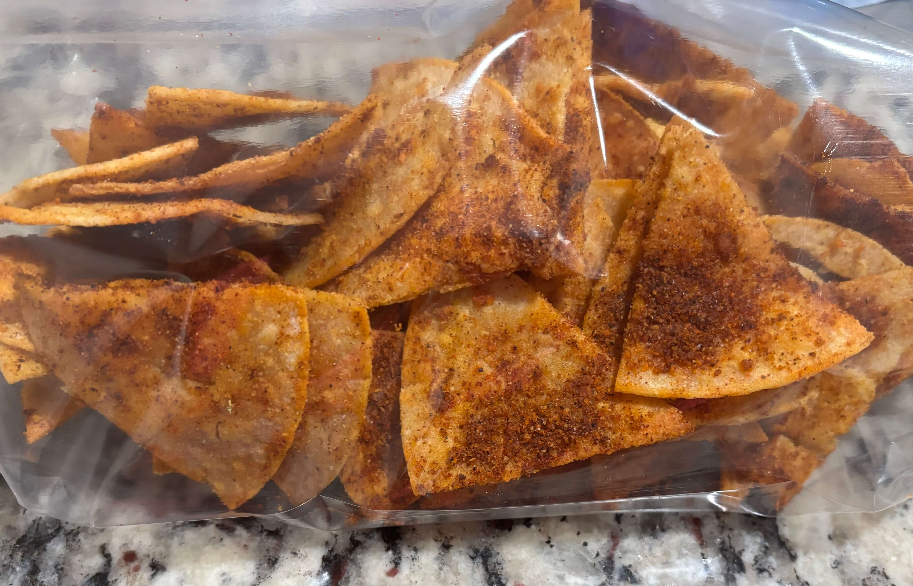

Home
Baked Nacho Cheese Chips

Ingredients
- 4 tbsp cheddar cheese powder (the kind from a mac and cheese box or a shaker works best)
- 1 tsp garlic powder
- 1 tsp onion powder
- 1 tsp nutritional yeast
- 1/2 tsp salt
- A pinch of msg (optional)
- A pinch of citric acid (optional)
- 1 tsp tomato powder or grind up sun dried tomatoes (optional)
- Stack of thin corn tortillas cut into 6 or 8 triangles
- Neutral oil spray (avocado or vegetable)
Steps
- In a bowl mix together all the spices and seasonings.
- Preheat the airfryer to 350 degrees F
- Lightly spray the triangle tortillas with a neutral oil and season them with the seasoning mix. Flip them and spray the other side adding more seasoning so that both sides are seasoned
- Cook them at 350 degrees F for 5-7 minutes, shaking the basket every 2 minutes.
- As soon as they come out of the air fryer, toss them in a bowl with the remaining seasoning while they are still hot and slightly oily.
- Let them cool completely on a wire rack while they continue to crisp up
Tips
- If your tortillas are a little bit dry/stale or have been sitting in the fridge they bake up crispier than fresh moist ones
- You can also cook them in the oven at 350 degrees F for about 8-12 minutes flipping halfway through